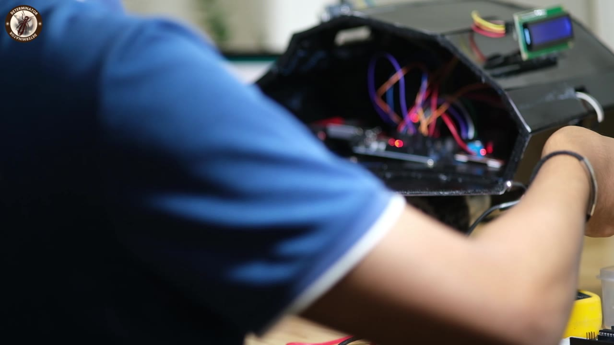

Robotics research
DeTerminator
An Arduino-based rover that explores carbon dioxide and humidity as possible indicators of termite activity.
Selected work
An individual robotics research project and a desktop inventory application.